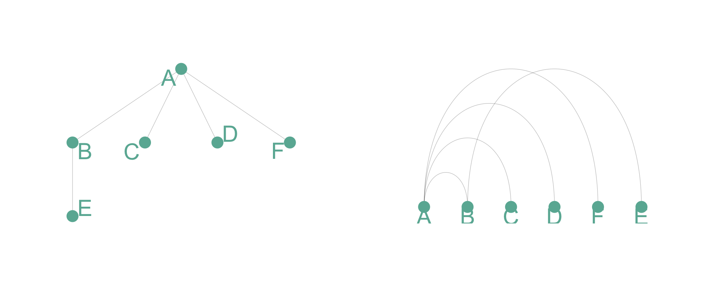
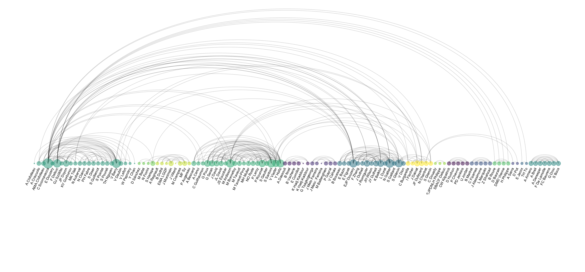
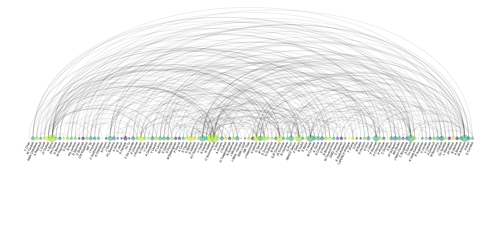

Arc diagram
definition - mistake - related - code
An arc diagram is a special kind of network graph.
It is consituted by nodes that represent entities and by
links that show relationships between entities. In arc
diagrams, nodes are displayed along a single axis and links
are represented with arcs.
Here is a simple example. Five links between 6 nodes are represented using a 2d network diagram (left) and an arc diagram (right)
# Libraries
library(tidyverse)
library(viridis)
library(patchwork)
library(hrbrthemes)
library(igraph)
library(ggraph)
library(colormap)
# A really simple edge list
links=data.frame(
source=c("A", "A", "A", "A", "B"),
target=c("B", "C", "D", "F","E")
)
# Transform to a igraph object
mygraph <- graph_from_data_frame(links)
# Make the usual network diagram
p1 <- ggraph(mygraph) +
geom_edge_link(edge_colour="black", edge_alpha=0.3, edge_width=0.2) +
geom_node_point( color="#69b3a2", size=5) +
geom_node_text( aes(label=name), repel = TRUE, size=8, color="#69b3a2") +
theme_void() +
theme(
legend.position="none",
plot.margin=unit(rep(2,4), "cm")
)
# Make a cord diagram
p2 <- ggraph(mygraph, layout="linear") +
geom_edge_arc(edge_colour="black", edge_alpha=0.3, edge_width=0.2) +
geom_node_point( color="#69b3a2", size=5) +
geom_node_text( aes(label=name), repel = FALSE, size=8, color="#69b3a2", nudge_y=-0.1) +
theme_void() +
theme(
legend.position="none",
plot.margin=unit(rep(2,4), "cm")
)
p1 + p2
Arc diagrams are not as good as 2d network charts to convey the overall node structure. It has 2 main advantages tough:
Here is an example showing the co-authorship network of a researcher. Vincent Ranwez is author of several scientific publications and counts more than 100 co-authors, all represented by a node on the following chart. If two people have already been on the same paper, they are linked by an arc.
# Load data
dataUU <- read.table("https://raw.githubusercontent.com/holtzy/data_to_viz/master/Example_dataset/13_AdjacencyUndirectedUnweighted.csv", header=TRUE)
# Transform the adjacency matrix in a long format
connect <- dataUU %>%
gather(key="to", value="value", -1) %>%
mutate(to = gsub("\\.", " ",to)) %>%
na.omit()
# Number of connection per person
c( as.character(connect$from), as.character(connect$to)) %>%
as.tibble() %>%
group_by(value) %>%
summarize(n=n()) -> coauth
colnames(coauth) <- c("name", "n")
#dim(coauth)
# Create a graph object with igraph
mygraph <- graph_from_data_frame( connect, vertices = coauth, directed = FALSE )
# Find community
com <- walktrap.community(mygraph)
#max(com$membership)
#Reorder dataset and make the graph
coauth <- coauth %>%
mutate( grp = com$membership) %>%
arrange(grp) %>%
mutate(name=factor(name, name))
# keep only 10 first communities
coauth <- coauth %>%
filter(grp<16)
# keep only this people in edges
connect <- connect %>%
filter(from %in% coauth$name) %>%
filter(to %in% coauth$name)
# Create a graph object with igraph
mygraph <- graph_from_data_frame( connect, vertices = coauth, directed = FALSE )
# prepare a vector of n color in the viridis scale
mycolor <- colormap(colormap=colormaps$viridis, nshades=max(coauth$grp))
mycolor <- sample(mycolor, length(mycolor))
# Make the graph
ggraph(mygraph, layout="linear") +
geom_edge_arc(edge_colour="black", edge_alpha=0.2, edge_width=0.3, fold=TRUE) +
geom_node_point(aes(size=n, color=as.factor(grp), fill=grp), alpha=0.5) +
scale_size_continuous(range=c(0.5,8)) +
scale_color_manual(values=mycolor) +
geom_node_text(aes(label=name), angle=65, hjust=1, nudge_y = -1.1, size=2.3) +
theme_void() +
theme(
legend.position="none",
plot.margin=unit(c(0,0,0.4,0), "null"),
panel.spacing=unit(c(0,0,3.4,0), "null")
) +
expand_limits(x = c(-1.2, 1.2), y = c(-5.6, 1.2)) 
Note: you can read more about this story in the dedicated page.
A possible variation in arc diagrams consists to make the links wider
when the connection is stronger. To do so you need a
weighted network where each connection as a weight.
Since it is not the case in the previous autorship network, here is another one showing the character co-occurrence in the chapters of Victor Hugo’s classic novel Les Misérables. This example comes from Gaston Sanchez and is described more in depth here (with R code).

The order of nodes is the key for arc diagrams. See the following figure showing the same arc diagram than above, but with nodes displayed in a random order. Harder to find any insight isn’t it?
#Reorder dataset randomly
coauth <- coauth %>%
slice( sample(c(1:nrow(coauth)), nrow(coauth)))
# Create a graph object with igraph
mygraph <- graph_from_data_frame( connect, vertices = coauth, directed = FALSE )
# prepare a vector of n color in the viridis scale
mycolor <- colormap(colormap=colormaps$viridis, nshades=max(coauth$grp))
mycolor <- sample(mycolor, length(mycolor))
# Make the graph
ggraph(mygraph, layout="linear") +
geom_edge_arc(edge_colour="black", edge_alpha=0.2, edge_width=0.3, fold=TRUE) +
geom_node_point(aes(size=n, color=as.factor(grp), fill=grp), alpha=0.5) +
scale_size_continuous(range=c(0.5,8)) +
scale_color_manual(values=mycolor) +
geom_node_text(aes(label=name), angle=65, hjust=1, nudge_y = -1.1, size=2.3) +
theme_void() +
theme(
legend.position="none",
plot.margin=unit(c(0,0,0.4,0), "null"),
panel.spacing=unit(c(0,0,3.4,0), "null")
) +
expand_limits(x = c(-1.2, 1.2), y = c(-5.6, 1.2)) 
A work by Yan Holtz for data-to-viz.com


7 Comments
Any thoughts on this? Found any mistake? Disagree? Please drop me a word on twitter: